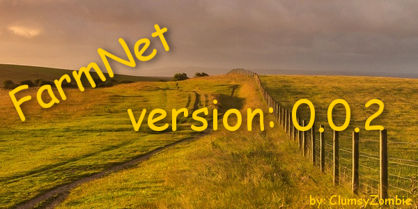

Welcome to FarmNet SystemFarmNet is a system to help you view your farm outside of the game.
This read only tool allows you to monitor your farm as users are logged in and working.This software is for Farming Simulator 2017.
To get the latest updates and information please visit FarmNet